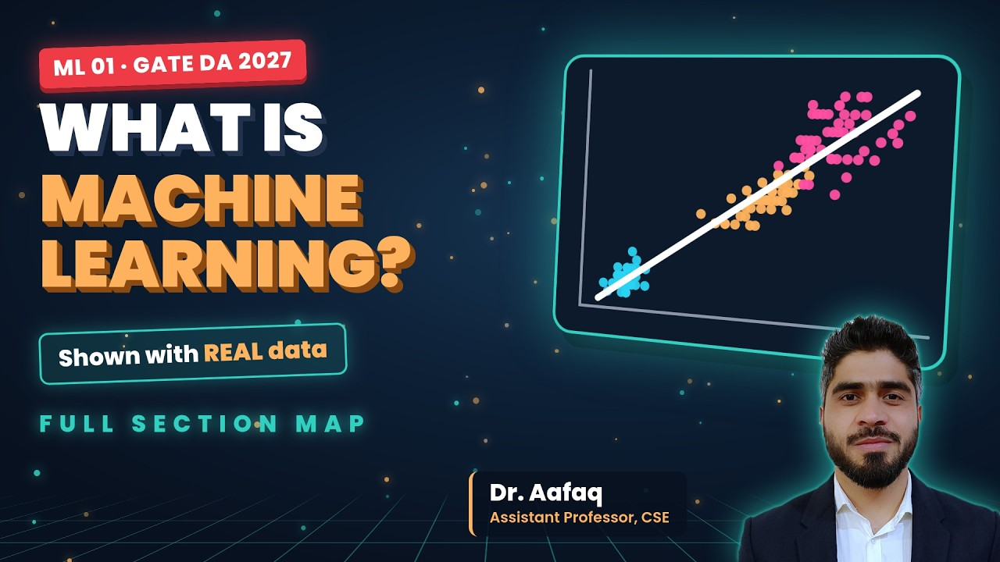
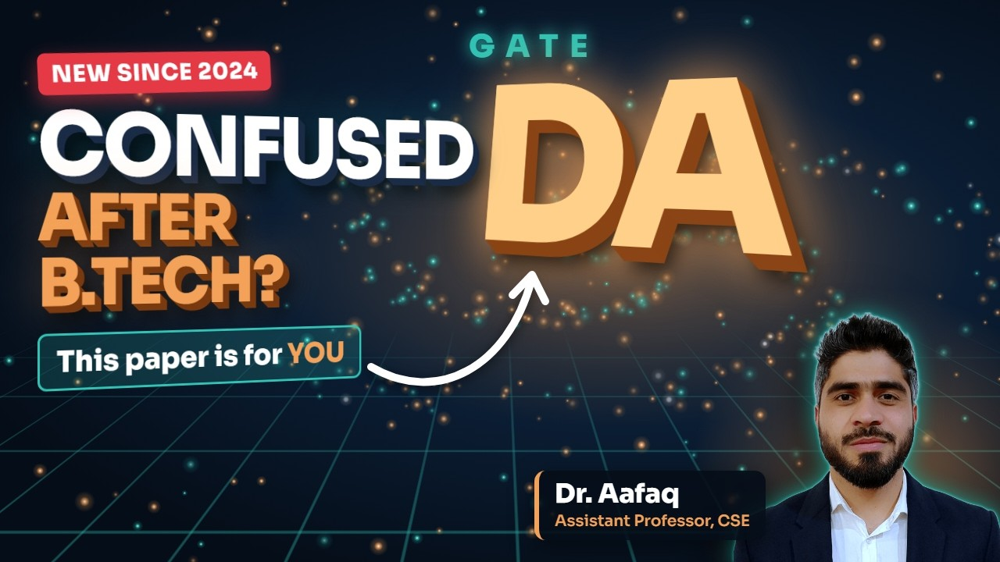
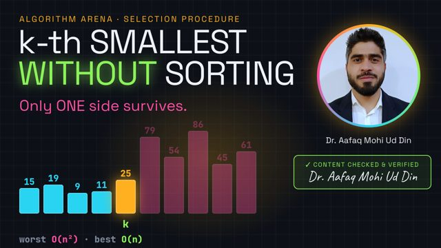

aafaq@cs:~$ whoami
Dr. Aafaq Mohi Ud Din · Assistant Professor, CSE @ GCET Kashmir
aafaq@cs:~$ cat research.md
Deep graph neural networks forget as they grow (over-smoothing, over-squashing). My PhD at NIT Srinagar built ones that remember.
aafaq@cs:~$ ./teach --free --visual --verified
GATE · GATE DA · JKSSB: every graph computed from real data, every answer checked.
aafaq@cs:~$ echo $MOTTO
"Computer science, shown. Not just told."
aafaq@cs:~$
7×GATE qualified (CS & IT)
5×UGC-NET qualified
Rank 1JKPSC Assistant Professor
75citations on Google Scholar
What's new
- 9 Oct 2026VideoReleased Syntax Analysis: CFG, Parse Trees & Ambiguity (Visual) in Compiler Design · GATE CS/IT.
- 9 Oct 2026VideoReleased Memory & Storage for JKSSB in JKSSB Computer Knowledge.
- 8 Oct 2026VideoReleased Syntax Analysis: The Big Picture (Visual) in Compiler Design · GATE CS/IT.
- 7 Oct 2026VideoReleased Semantic Analysis, Visualised: Types, Scope & SDD in Compiler Design · GATE CS/IT.
- 6 Oct 2026VideoReleased ML 05: Bias-Variance Trade-off in GATE DA 2027 · Machine Learning.
- 6 Oct 2026VideoReleased Lexical Analysis, Visualised: How a Compiler Reads Code in Compiler Design · GATE CS/IT.
- 5 Oct 2026ShortShort: What happens when you press RUN?.
- 5 Oct 2026VideoReleased How a Compiler Works: 6 Phases, Visualized in Compiler Design · GATE CS/IT.
- 5 Oct 2026VideoReleased Multiple Linear Regression Explained Visually in 3D in GATE DA 2027 · Machine Learning.
- 4 Oct 2026MilestoneLaunched this website: every lecture, Short and course in one place.
- 4 Oct 2026VideoReleased Graph Representation: adjacency list vs adjacency matrix in the Algorithm Arena: Θ(n + e) vs Θ(n²), and when each one wins.
- 4 Oct 2026ShortShort: Adjacency Matrix vs List: 200,000× Difference.
- 3 Oct 2026VideoReleased Heap Sort Explained Visually in the Algorithm Arena: build heap in O(n), n log n always, and why heap sort is not stable.
- 27 Sep 2026MilestoneCompleted the JKSSB Computer Knowledge series: all 10 episodes, from computer fundamentals to GIS and GPS.
- January 2024MilestoneJoined GCET Kashmir as Assistant Professor after ranking first in the JKPSC selection.
- 2023PaperOur paper on over-smoothing and over-squashing in graph neural networks appeared in Big Data Mining and Analytics (IEEE, impact factor 13.6).
Video courses

≡▶4videos
▶ VIEW PLAYLIST
GATE DA · MLGATE DA 2027 · Machine Learning
The full Machine Learning section of the GATE DA syllabus, in 20 visual lectures built on real data, with GATE-style questions in every video.

≡▶1video
▶ VIEW PLAYLIST
GATE DAGATE DA · Start here
What GATE DA is, the exam pattern, the 7 syllabus pillars, and your roadmap.

≡▶4videos
▶ VIEW PLAYLIST
AlgorithmsAlgorithm Arena · GATE CS
Algorithm design and analysis for GATE CS, with PYQs in every concept.
Latest publications
Deep Learning Meets Graph Theory: A Novel Approach to Generating Embeddings for Recommender Systems21st Learning and Technology Conference (L&T), IEEE, 302–3072024
Limits of depth: Over-smoothing and over-squashing in GNNsBig Data Mining and Analytics 7(1), 205–2162023IF 13.6cited by 55
A review of challenges and solutions in the design and implementation of deep graph neural networksInternational Journal of Computers and Applications 45(3), 221–2302023IF 3.6cited by 13